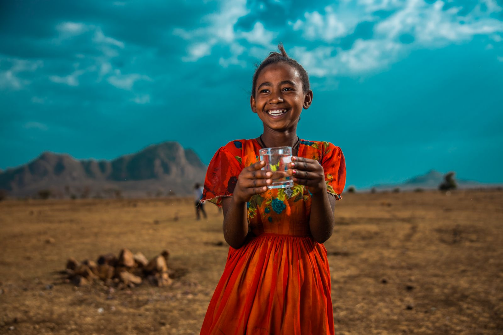
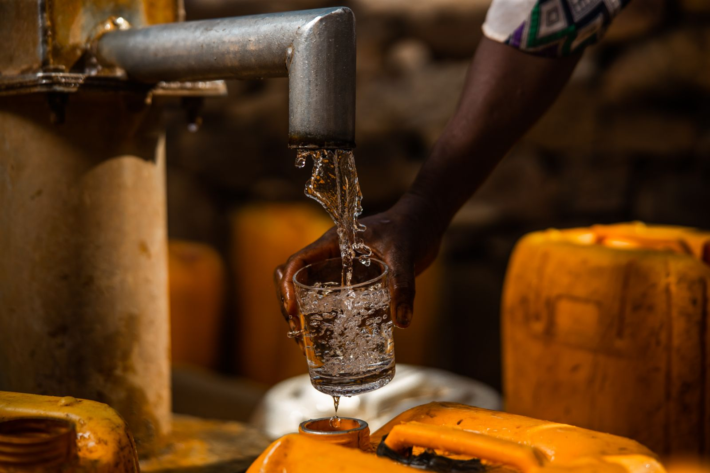

100% of your donation goes to bringing a community clean water

Amina used to walk miles every day to collect water for her family. Thanks to your support, her village now has a clean water well. Amina can go to school and her family is healthier and happier.

Your donations have helped bring clean water to communities in Ethiopia, Rwanda, and Malawi.